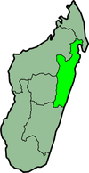

Province de Tamatave
Un article de Wikipédia, l'encyclopédie libre.
|
|
Cet article est une ébauche concernant Madagascar.
Vous pouvez partager vos connaissances en l’améliorant (comment ?) selon les recommandations des projets correspondants.
|
| Province de Tamatave | |
|  | |
|---|---|
| Administration | |
| Pays | Madagascar |
| Type | Province |
| Capitale | Tamatave |
| Géographie | |
| Superficie | 71 911 km2 |
| Démographie | |
| Population | 2 593 063 hab. (juillet 2001) |
| Densité | Erreur d’expression : nombre inattendu hab./km2 |
{kind=link}
La province de Tamatave est une province de Madagascar avec une superficie de 71 911 km2. Elle a une population de 2 593 063 habitants (juillet 2001). Son chef-lieu éponyme Tamatave, en malgache : Toamasina.
Cette province est constituée de trois régions :
- Région du Lac d'Alaotra : (mg) Alaotra-Mangoro.
- Analanjirofo
- Région de l'Est : (mg) Atsinanana.
Sommaire[masquer] |
Districts[modifier]
La province est divisée en dix-huit districts (Fivondronana):
- Ambatondrazaka
- Amparafaravola
- Andilamena
- Anosibean'ala
- Antanambao-Manampotsy
- Fénérive : (mg) Fenoarivo Atsinanana.
- Mahanoro
- Mananara-Nord : (mg) Mananara-Aviratra.
- Maroantsetra
- Marolambo
- Moramanga
- Île Sainte-Marie : (mg) Nosy Boraha, peu usité.
- Soanierana Ivongo
- Tamatave I : (mg) Toamasina-I.
- Tamatave II : (mg) Toamasina-II.
- Vatomandry
- Vavatenina
- Vohibinany
{kind=link}
{kind=link}
{kind=link}